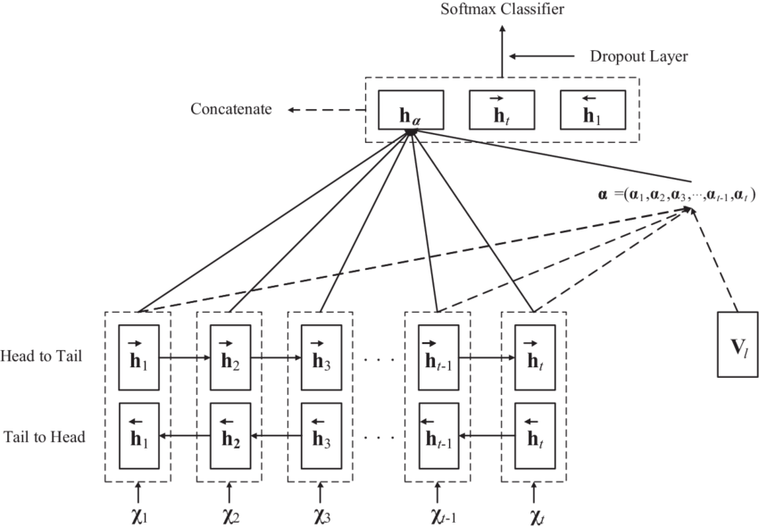
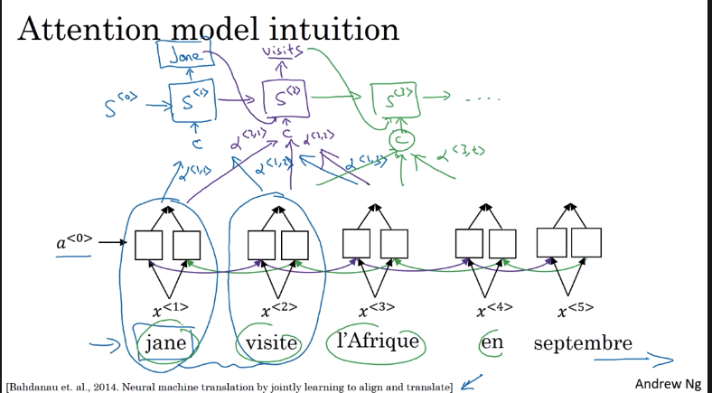
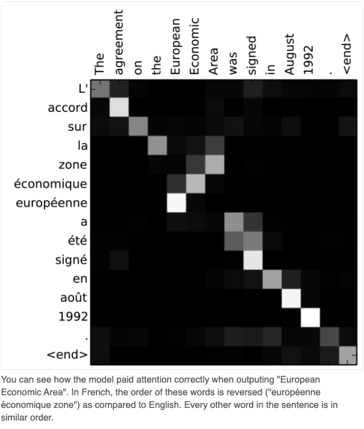
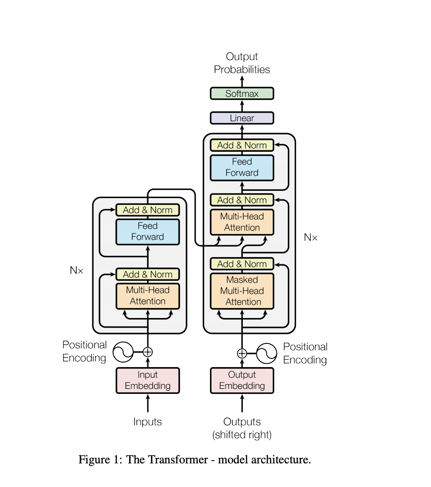
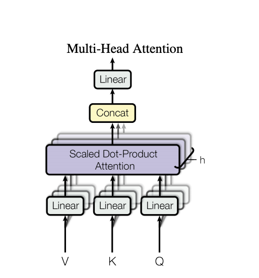
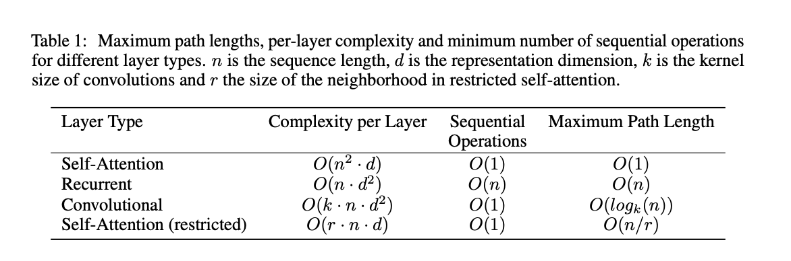
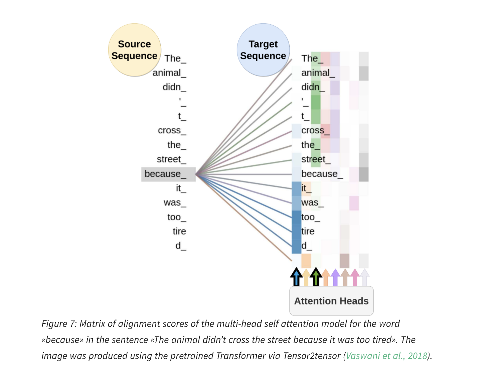
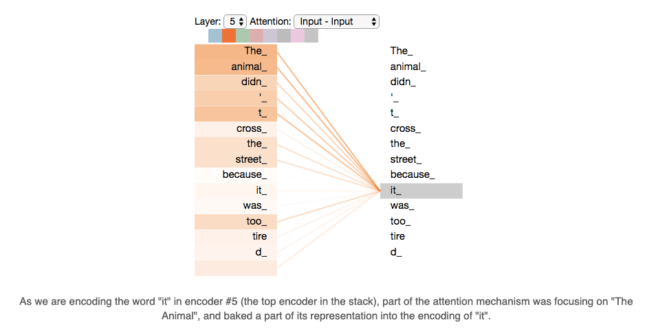
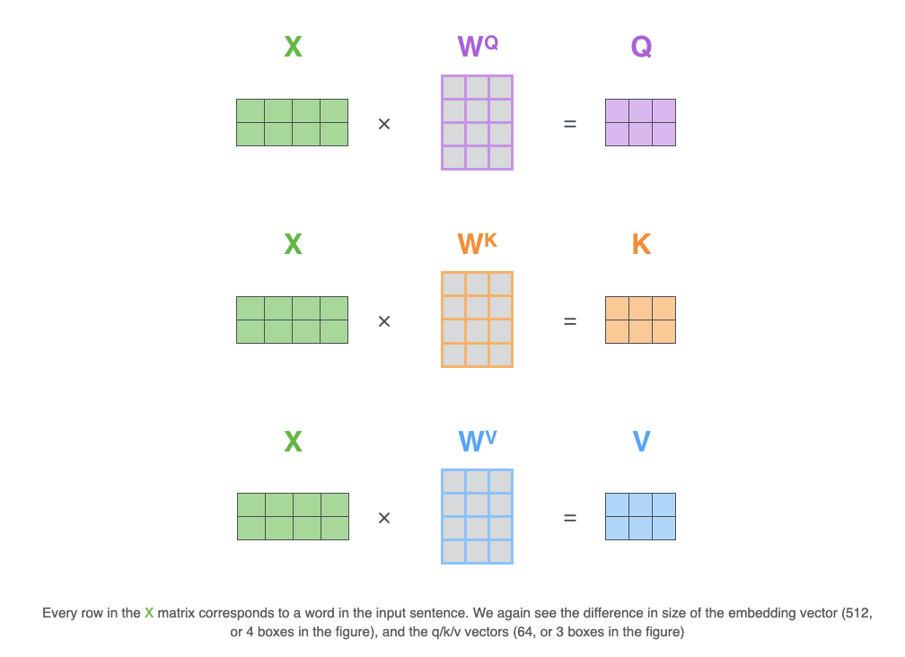
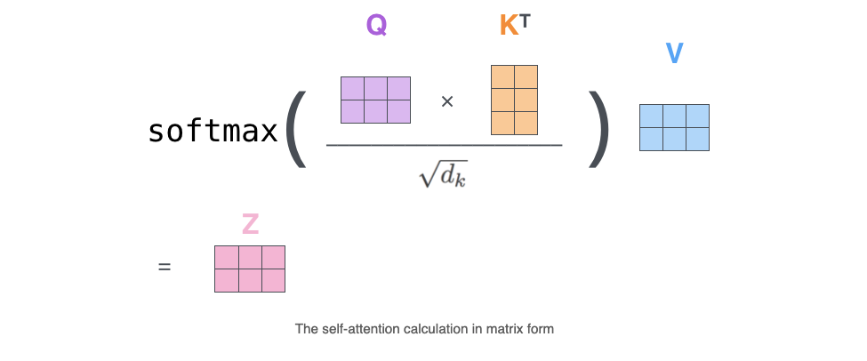

Well, the time has come. In this blog, we will be discussing one of the most important breakthroughs in the natural language processing research TRANSFORMERS 🤖 …
This research was introduced by researchers at Google in the year 2017. In RNNs the main issues were forgetting the context, especially with large sentences. In this research, they are introducing an attention mechanism to help the model to remember what all are the part of the sentence where it needs to give more attention to the rest. Followed by this many booming research came BERT ( which includes both directional flow while learning ) and interestingly this transformer logic gave good results in images as well...Then comes multimodality concepts. If the same algorithm can use to learn two different types of input why can’t we use them to learn them together there is a lot of research going on there as well.
Okay, let us put back our attention to our main topic of discussion. Let us look into the intuition behind the attention models. Also, we have been discussing so many theories in our past blogs right. I want to do some hands-on coding as well in the coming blogs so stay tuned 🕺.
Attention Model Intuition
We can say that the idea of the attention model came as a modification to the encoder-decoder models and it became one of the influential models afterwards. Let us consider the long sentence situation in the encoder-decoder methods where we are asking the encoder to memorise the entire sentence and then asking the decoder to generate a full sentence from memory. But, as human, we will be looking into the data part by part and then translating. Due to this, we observed that the performance of the encoder-decoder method reduces significantly as the length of the sentences increases. Using this attention model we are trying to address the dip that happened in the graph due to the higher length of the sentences. We will be looking into the smaller chunks rather than considering the entire sentence at a time. [ The classical choice for the context vector is the last hidden state of the encoder and a fixed-sized context vector, another point to remember is that the final hidden state of the encoder is the first hidden( the entire context) to the decoder]
Consider a machine translation model with Bidirectional RNN, So at the encoder level, we will be getting rich input features because we are considering the words on both sides. Here when we introduce attention models, along with the vectors while predicting the output word says the first word we will be providing a value α to show that how much attention we should give to the given word while predicting the first word hence α<1,1> to α<1,m> where m is the number of words in the input text. When generating the second word we will be having a different set of attentions like α<2,1> to α<2,m>. This will continue till the EOS. Also, remember that in the given example the output layer which produces the translation is a single directional model.[ Here the context vectors are adjusted for the output element in the target, hence not a fixed vector, hear not a single hidden layer is passed instead all hidden layer passed to each state]
 Attention Model
As we mentioned earlier in the decoder layer we will be getting a weighted sum of encoded vectors with the attention weights. To summarise, the α<t,t’> will be the amount of “attention” that y<t> should pay to a<t’>.
Now let us look into some maths
- How to compute the attention α<t,t’> : First we will compute the e<t,t’> then we do a softmax
- How to compute e<t,t’>: Consider a Feed-Forward NN take the previous state value ( basically previous word), because we don’t know what is the function hence we use the Feed Forward NN and by trusting gradient descent and backpropagation to find out the specific function to fit.
One challenge of this algorithm is the time taken to run this algorithm if you have Tx words in input and Ty words in the output then Tx*Ty will be the total number of the attention parameters.
Side note: While doing the machine translation task, we can plot the attention weights generated and can evaluate how much they are paying attention to the actual words using the given algorithm 😜
So this is the stepping stone to the big guy transformer. Let us demystify the paper Attention all you need
As I mentioned above this paper is from google. Here they use the attention-based concepts to boost up the speed at which the models can be trained. In this paper, they literally ditch the use of RNN and says we don’t need recurrence all we need is attention to the data and you will be fine. And then they proposed a Transformer architecture
What does it do?
It has an encoder and decoder part, but don’t get confused because it is not a sequential one all the tasks happen at once. Assume you are predicting the 3rd word in the target sentence then in the encoder part you input the entire source sentence and in the decoder part you input the first two generated target word and on the right top part of the architecture, you will get your predictions. Since it is a single architecture and every production is one training sample, but in RNNs the entire sentence is one sample hence the backpropagation has to done for each word but here just for one token 😲. This was a quite new approach because people always believe that we kind of need the RNN to learn the dependencies, but in reality, we just need the attention value.
Let us look into the architecture further..
The input embedding and the output embedding are symmetrical, where the tokens get embedded say word2vec. Then it comes with positional encoding because we are looking into a token level and later on you kind of loses the order of the words in the sentence. To avoid that we append the position of the word in the sentence along with its embedding. In architecture, we can see there are three kind of attention. In the encoding, Multi-head attention determines the attention to the input vectors, and in the decoding part first attention mechanism provides attention to the output words generate and then both of the attention get combined and final attention provided to predict the target word. If might have noticed that is attention mechanism has 3 input going into the model let us dig into what are those.
They are Values, Keys are Queries. In the second attention model of the decoder, the values and keys are the output from the encoder part whereas the query part is the input from the already generated outputs ( encoding of the target sentence). There are many fashions to compute attention. Essentially it gets the dot products and then does the softmax over them. The dot product will give the angle between the vectors. Each key has an associated value say v1, v2 etc. Then we do the dot product with the query then the one with the biggest dot product will be the key aligns to it and then do the softmax ( it is kind of maximising function in a different way). The encoder part finds an interesting part of the source sentence and build key-value pairs and at the same time, the target language encoder generates the query when all of these work together we get a good result. The interesting part of the project is that it reduces the path the computation has to flow through the network.
And check out a simple transformer implementation for sentence generation here 🔖
A Little bit more into self-attention before we conclude
As we mentioned earlier the reason being the transformer architecture proposed is that it alleviate the computational complexity due to the RNN architectures. The above table clearly proves that.
Let us look into the multi-head attention method, the main reason behind this idea is to get the information of the data from different subspaces, rather than calculating it one time. In the multi-thread attention mechanism, they calculate the attentions from the source data multiple time that too parallelly and the final results are the combination of all of these. Hence the context vectors will be rich with more information like dependencies at the semantic and syntactic level and grammar and coreference etc

What is self-attention?
As we looked into earlier the idea behind the transformers is to get rid of the RNNs or in other words the model, entirely built on a self-attention mechanism without using sequence-aligned recurrent architectures.
Let us consider the given sentence
The animal was too tired to cross the road because it was too tired
In this sentence the word it refers to the animal for us humans it is very easy to understand but for algorithms not so much. Self-attention is a mechanism that allows the algorithm to relate that it refers to the word animal. During the model training, each word/position learns which word it put attention to by looking into all the other words in the sentence. And this helps us to give a better encoding for the word ( if we have multiple layers many dependencies like this will be tracked), but in RNN these interdependencies are not evidently tracked.
Let us look into the calculation of the self-attention
We know that each word in the input will be transformed into an embedding and then we modify this embedding into 3 different vectors by multiplying with 3 matrices ( Query, Key, Value) that we trained during training. The created vectors are smaller in size, but not necessarily this is a choice the paper made for computational purposes. Essentially, these 3 vectors contain the abstraction for self-attention. The self-attention is nothing but a scoring mechanism, where we calculate a score for each word in the input to the word being calculated. It is a dot product of query to key Q.K ( where the key value will be changing for all the input vectors. Then we divide by 8 ( square root of the dimension of a key vector) then do a softmax of these values. Then we multiply this with the value vector of each word ( the idea is to reduce the importance of unwanted words). And then finally we sum it up this gives the self-attention layer at this position.
 I know I know...It’s a lot you need time to process right, so do I 🤯. Let us go through the topics again and learn about these and we will talk about the missed topics in the next blog…